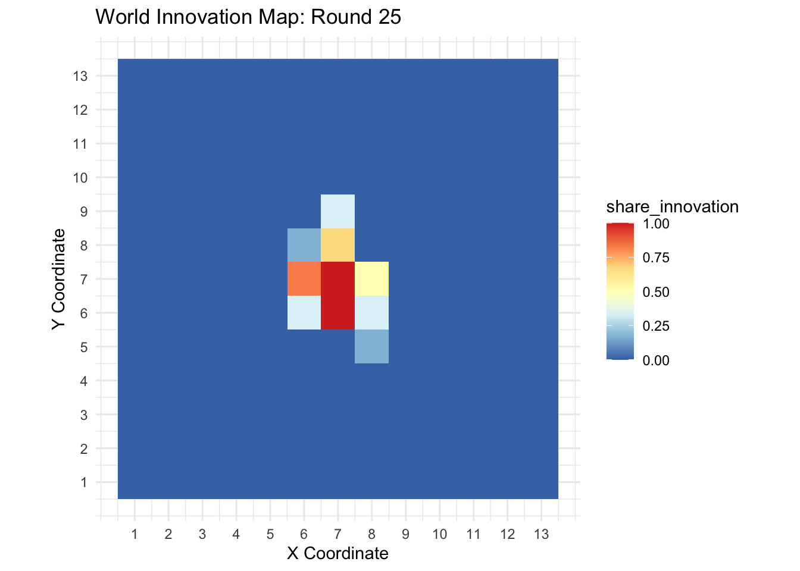
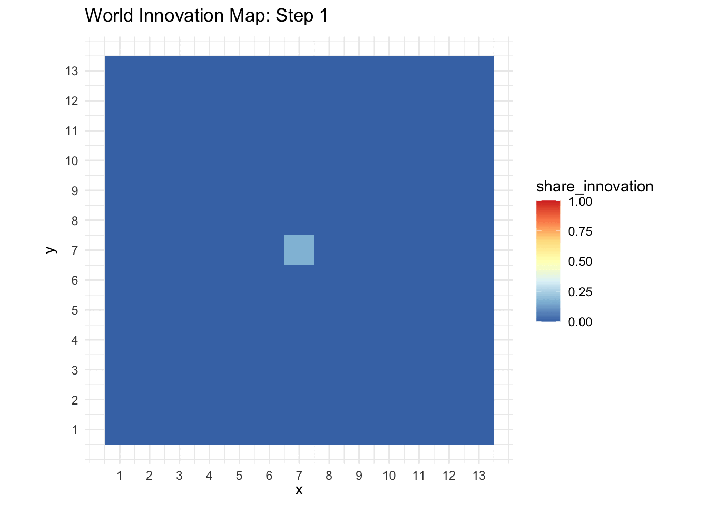
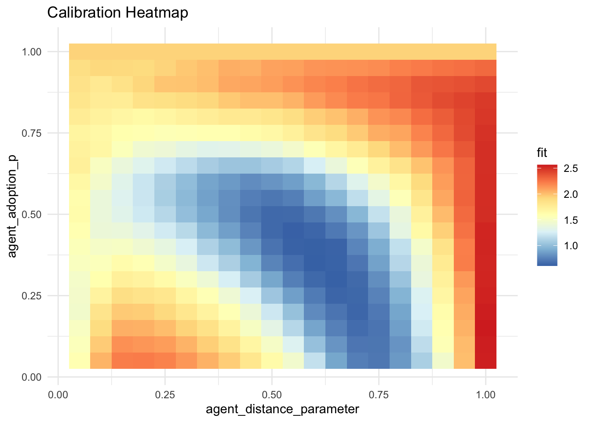

needs(tidyverse)
model <- list(
seed = 12345, # for reproducibility
world_size = 13, # grid dimension (M)
agents_per_cell = 6, # agents per cell (n)
agent_distance_function = "geometric", # the specified distribution d is drawn from
agent_distance_parameter = c(0.8), # the parameters for the distribution function
agent_adoption_p = 0.8 # adoption probability (p)
)Chapter 19: Agent-based Modeling – Empirically Calibrated
Introduction
Welcome to our session on Agent-Based Modeling (ABM) and parameter calibration in R. In the coming chapters, you will learn how to set up a simple ABM that simulates the diffusion of a superior innovation among agents, then use calibration techniques to estimate model parameters from observed (or synthetic) data.
Key topics in this chapter:
- What is Agent-Based Modeling?
- Why Do We Need Calibration?
- Outline of the Session
What is Agent-Based Modeling?
Agent-Based Modeling (ABM) is a computational approach where a large number of individual entities—called agents—interact within a defined environment. Each agent can follow simple or complex rules, and through these interactions, emergent phenomena arise at the system level.
- Agents can represent people, firms, animals, or any discrete decision-making units.
- Rules often include how agents move, communicate, adopt behaviors, or otherwise change over time.
- Environment can be spatial (e.g., a grid or network), social (e.g., hierarchy, peer groups), or both.
Why ABM?
1. It captures heterogeneity: Each agent can have different attributes or decision rules.
2. It models interactions directly: Agents can influence each other’s state (e.g., spread of ideas or contagion).
3. It allows emergence: Large-scale patterns (e.g., diffusion curves) arise from simple local interactions.
Why Do We Need Calibration?
A model, no matter how cleverly designed, is most useful when it can be compared to real data or synthetic data that mimics reality. Calibration is the process of adjusting a model’s internal parameters so that its output matches observed data as closely as possible.
- Parameter Estimation: Find the combination of parameters (e.g., contagion probability, contact rate, etc.) that leads to the most realistic model outputs.
- Validation: Once calibrated, we can check if the model can predict data in scenarios beyond what it was originally fit to.
- Policy or Scenario Testing: A calibrated model is more reliable for exploring what-if scenarios or interventions.
In today’s session, we will use synthetic historic data generated with hidden (“secret”) parameters. Your goal will be to figure out which parameters best explain the simulated outcomes—mimicking what you would do with real-world data if these parameters were unknown.
Outline of the Session
Here’s how the rest of the session will unfold:
- ABM Mechanics (Chapter 2)
- We will dive into the details of our ABM code, explaining each function that initializes the world, updates agents, and tracks innovation over time.
- Calibration Techniques (Chapter 3)
- We will introduce our fit functions, show how to compare data, and illustrate simple grid-search or Monte Carlo approaches to find “best” parameters.
- Hands-On Exercises (Chapter 4)
- You will practice calibrating the model, experiment with fit functions, and refine your intuition about why different parameter settings lead to different diffusion outcomes.
- Appendix (Chapter 5)
- Additional references, extended code listings, and more advanced topics.
By the end of this session, you will have practical experience in: - Building and running an agent-based simulation in R. - Implementing calibration routines and interpreting the results. - Visualizing parameter search results with heatmaps or other techniques.
Final Notes
- Software Requirements: We will use R (version 4.0 or later), with packages including
tidyverseand preferably withforeachanddoParallel. - Data: Synthetic data (
historic_data.RData) will be provided.
- Code: Functions for simulation and calibration reside in separate R scripts (
functions_simulation.R,functions_calibration.R). We will call them throughout.
In the next chapter, we will explore the mechanics of our ABM, so you can see how the innovation spreads among agents step by step.
Let’s begin our journey!
ABM Simulation
In this chapter, we will delve into the mechanics of the agent-based model (ABM) that simulates the diffusion of an innovation. Our model starts with a grid-based world of agents, allows them to interact and spread the innovation, and then collects data on how the innovation diffuses over time.
Key Topics: 1. Defining a Model 2. World initialization 3. Visualization of the grid 4. Movement and contact logic 5. The simulation loop 6. Reporting and summarizing results
Throughout this chapter, we’ll show the core functions, which are stored in a separate file (e.g. functions_simulation.R) and simply call via source("functions_simulation.R"). Here, we break them down for clarity.
Defining a Model
For our diffusion simulation, we use a simple mesh grid of size \( M M \). Each cell on this grid is occupied by \( n \) agents. Agents are either innovators (already using the new innovation) or non-innovators.
At each time step, all innovators: 1. Draw a random distance \( d \) from a specified distribution (e.g., geometric, Weibull, etc.) using the agent_distance_function.
2. Select one random cell exactly \( d \) units away (in Manhattan distance).
3. Pick one random agent in that cell (the targeted agent).
4. Attempt to convince the targeted agent to adopt the innovation, succeeding with probability \( p \) (defined by agent_distance_contagion).
If successful, the targeted agent becomes an innovator as well.
Additionally, we include a seed for reproducibility, so each run can produce consistent results. Here is an example R list capturing these model parameters:
Creating the World
After defining the model parameters, we need a function to initialize our world with agents. Each agent is placed on a ( M M ) grid, with ( n ) agents per cell. We also specify which agent starts off with the innovation.
world_init <- function(world_size = 9,
agents_per_cell = 3) {
# Create the grid
cells <- expand.grid(x = 1:world_size, y = 1:world_size)
# Assign agents to grid cells
world <- cells %>%
slice(rep(1:n(), each = agents_per_cell)) %>%
mutate(
id = row_number(),
cell_id = x + (y - 1) * world_size,
# Initialize the innovation to 1 in the center for just one agent
innovation = ifelse(
x == ceiling(world_size / 2) &
y == ceiling(world_size / 2) &
row_number() == ceiling((world_size * world_size * agents_per_cell) / 2),
1,
0
)
)
return(world)
}
world <- world_init()
world |> head() x y id cell_id innovation
1 1 1 1 1 0
2 1 1 2 1 0
3 1 1 3 1 0
4 2 1 4 2 0
5 2 1 5 2 0
6 2 1 6 2 0Now the world is a data frame, for each agent a row with its x and y coordinates, the cell id, and its innovation-status (1 = innovator, 0 = not).
Additional Setup: Distance Drawing and Position Lookup
Before we will turn to Updating the World in Each Step, we will introduce to functions which will help us to run the simulation faster.
When we run our ABM, each innovator needs to pick a distance \( d \) from a probability distribution (e.g., a geometric or Weibull distribution). To avoid repeatedly switching among these distributions at each step, we define a single helper function that attaches the appropriate draw_distance() function to the model object.
model_implement_distance_function <- function(model){
model$draw_distance <- switch(
model$agent_distance_function,
"weibull" = function(n = 1) {
round(rweibull(n,
shape = model$agent_distance_parameter[1],
scale = model$agent_distance_parameter[2]))
},
"geometric" = function(n = 1) {
round(rgeom(n, prob = model$agent_distance_parameter[1]))
},
stop("Unsupported agent distance function")
)
return(model)
}
model_implement_distance_function(model)$seed
[1] 12345
$world_size
[1] 13
$agents_per_cell
[1] 6
$agent_distance_function
[1] "geometric"
$agent_distance_parameter
[1] 0.8
$agent_adoption_p
[1] 0.8
$draw_distance
function (n = 1)
{
round(rgeom(n, prob = model$agent_distance_parameter[1]))
}
<environment: 0x12bbc1388>We also define a position lookup function to quickly find all agents in a specific cell, greatly improving performance when we need to identify potential targets.
create_position_lookup <- function(world) {
# Group by cell_id, store a list of all IDs in that cell
# 'deframe()' makes a named list with 'cell_id' as the name
world %>%
group_by(cell_id) %>%
summarize(agent_ids = list(id), .groups = "drop") %>%
deframe()
}
create_position_lookup(world) |> head()$`1`
[1] 1 2 3
$`2`
[1] 4 5 6
$`3`
[1] 7 8 9
$`4`
[1] 10 11 12
$`5`
[1] 13 14 15
$`6`
[1] 16 17 18A Single Time Step
At each time step in our ABM, we want to simulate how existing innovators attempt to convince other agents to adopt the innovation. The process includes:
- Identifying all current innovators.
- Drawing a random distance for each innovator and selecting a target cell using Manhattan distance.
- Picking a random agent in that cell.
- Filtering out innovators who fail a random threshold (they won’t successfully convince anyone).
- Updating the targeted agents’ status if they have been convinced to adopt the innovation.
However, for performance reasons, our actual implementation filters out would-be unsuccessful innovators before drawing distances. This approach avoids unnecessary computations for innovators who would fail anyway. For example, if we have 1,000 innovators but only a 5% chance of convincing someone, filtering first means we only process about 50 innovators for the subsequent steps—significantly reducing computational overhead.
Below is the world_step() function, highlighting how these steps are organized for both correctness and efficiency.
world_step <- function(
world,
model,
position_lookup = create_position_lookup(world) # if no position_lookup is provided, it is calculated automatically
){
# 1) Select all agents who are innovators
innovators <- world %>% filter(innovation == 1)
# If everyone is already converted, don't run the simulation step
if (nrow(innovators) == nrow(world)) return(world)
# 2) Filter out innovators whose random_value is above the threshold.
# That is, only keep those who will successfully convince a target agent.
# Filtering here saves performance because we skip the following steps
# for innovators who wouldn't convert anyone anyway.
innovators <- innovators %>%
mutate(random_value = runif(n())) %>%
filter(random_value > model$agent_adoption_p)
# If no innovators remain after filtering, skip the step
if (nrow(innovators) == 0) return(world)
# 3) Draw a random distance for each innovator
innovators <- innovators %>%
mutate(
distances = model$draw_distance(nrow(innovators))
)
# 4) For each innovator, determine a random target cell using Manhattan distance
innovators <- innovators %>%
mutate(
target_cell = mapply(
function(x, y, d) {
get_a_cell_at_manhattan_distance(x, y, d, model$world_size)
},
x, y, distances
)
)
# 5) For each innovator, pick a random target agent within the target cell
innovators <- innovators %>%
mutate(
target_id = mapply(
function(tc, my_id) {
# If invalid cell, return -1
if (tc == -1) return(-1)
# Possible targets in that cell
targets_id <- position_lookup[[tc]]
# Exclude the innovator itself
targets_id <- targets_id[targets_id != my_id]
# If no one is left in that cell, return -1
if (length(targets_id) == 0) return(-1)
# Otherwise pick one at random
sample(targets_id, 1)
},
target_cell, # from innovators
id # from innovators
)
)
# Collect all valid targets (target_id != -1)
targets <- innovators %>% filter(target_id != -1) %>% pull(target_id)
# 6) Update those target agents to become innovators
if (length(targets) > 0) {
world$innovation[world$id %in% targets] <- 1
}
return(world)
}
world_step(world, model) |>
head() x y id cell_id innovation
1 1 1 1 1 0
2 1 1 2 1 0
3 1 1 3 1 0
4 2 1 4 2 0
5 2 1 5 2 0
6 2 1 6 2 0One key detail is how we sample a random cell at distance ( d ). We use the Manhattan metric (often referred to as L1 distance), which measures distance by summing the absolute differences in the ( x ) and ( y ) coordinates. In a grid setting, moving two cells to the left is considered equivalent in “distance cost” to moving one cell left and one cell up—both yield a Manhattan distance of 2. This makes sense for grid-based worlds, where movement is often discrete rather than diagonal or Euclidean.
The function for this is as follows:
get_a_cell_at_manhattan_distance <- function(x,
y,
d,
world_size
) {
# Return the same cell right away if d == 0
if (d == 0) return(x+(y-1)*world_size)
# For these values, we know for sure, there are no valid cells
if (d > (world_size-1)*2) return(-1)
cells_at_distance <- do.call(
rbind,
lapply(0:d, function(k) {
dist_rem <- d - k
# Four possible points for each k
rbind(
c(x + k, y + dist_rem),
c(x + k, y - dist_rem),
c(x - k, y + dist_rem),
c(x - k, y - dist_rem)
)
})
)
# Remove duplicates (especially when k=0 or dist_rem=0)
cells_at_distance <- unique(cells_at_distance)
# Filter out-of-bounds points
in_bounds <- cells_at_distance[,1] >= 1 & cells_at_distance[,1] <= world_size &
cells_at_distance[,2] >= 1 & cells_at_distance[,2] <= world_size
cells_at_distance <- cells_at_distance[in_bounds, , drop = FALSE]
# If no valid cells remain return -1
if (nrow(cells_at_distance) == 0) return(-1)
# Pick one cell at random
chosen_cell <- cells_at_distance[sample(nrow(cells_at_distance), 1), ]
return(chosen_cell[1]+(chosen_cell[2]-1)*world_size)
}Running the Full Simulation
After defining how to initialize the world (world_init()) and how a single time step unfolds (world_step()), we now need to combine these pieces to run our ABM across multiple rounds. The function run_simulation() orchestrates all the steps, producing a list of world states—one for each time step.
Here is the function:
run_simulation <- function(model,
max_steps = 25
){
set.seed(model$seed)
worlds <- list()
for (i in 1:max_steps){
if (i==1) {
# 1) Initialize the world in the first iteration
worlds[[i]] <- world_init(model$world_size, model$agents_per_cell)
# 2) Create a lookup table for quick agent lookups
# Agents do not move, so building this once is sufficient.
position_lookup <- create_position_lookup(worlds[[i]])
# 3) Attach the chosen distance-drawing function to the model
# (e.g., "weibull" or "geometric")
model <- model_implement_distance_function(model)
} else {
# 4) Update the world one step at a time
worlds[[i]] <- world_step(worlds[[i-1]], model, position_lookup)
}
}
return(worlds)
}Plotting the Simulation
Understanding the dynamics of your agent-based model (ABM) is crucial. Visualizations help you interpret and communicate the spread of innovation across the grid. In this section, we’ll explore two primary methods for visualizing the simulation results:
- Static Plots: Snapshot views of the world at specific time steps.
- Animations: Dynamic visualizations showing the evolution of the innovation over time.
Creating Static Plots
A static plot provides a clear snapshot of the world’s state at a particular time step. The world_print() function leverages ggplot2 to generate a color-coded grid that represents the share of innovators in each cell.
world_print <- function(world,
step = NA,
palette = "RdYlBu") {
# Summarize innovation per cell
world_summary <- world %>%
group_by(x, y) %>%
summarise(share_innovation = mean(innovation), .groups = 'drop')
# Create the plot
plot <- ggplot(world_summary, aes(x = x, y = y, fill = share_innovation)) +
# Draw a black background for the entire grid
geom_tile(data = expand.grid(x = seq(min(world$x), max(world$x)), y = seq(min(world$y), max(world$y))), aes(x = x, y = y), fill = "black") +
# Overlay the tiles for non-empty cells
geom_tile() +
scale_x_continuous(breaks = 1:max(world_summary$x)) +
scale_y_continuous(breaks = 1:max(world_summary$y)) +
coord_fixed() +
theme_minimal() +
scale_fill_distiller(palette = palette, limits = c(0, 1)) + # Fill color for tiles
labs(title = paste0("World Innovation Map: Round ", step),
x = "X Coordinate",
y = "Y Coordinate")
print(plot)
}
sim_data <- run_simulation(model)
world_print(sim_data[[3]], step = 3)world_print(sim_data[[25]], step = 25)
Creating Animations
While static plots are useful for snapshots, animations provide a comprehensive view of how innovation spreads over time. Animations can make it easier to identify patterns, trends, and anomalies that might not be apparent from static images.
Limitations on University Clusters
Due to server restrictions on the University Cluster’s RStudio Server version, certain animation functionalities may not work directly within the environment. To circumvent this, animation functions are excluded from the main script and placed in a separate file: functions_animations.R. This allows you to run animations locally on your machine without interfering with server policies.
needs(gganimate)
world_animation <- function(worlds){
all_worlds <- bind_rows(lapply(seq_along(worlds), function(i) {
worlds[[i]] %>%
group_by(x, y) %>%
summarise(share_innovation = mean(innovation), .groups = 'drop') %>%
mutate(time = i)
}))
anim <- ggplot(all_worlds, aes(x = x, y = y, fill = share_innovation)) +
geom_tile() +
scale_x_continuous(breaks = 1:max(all_worlds$x)) +
scale_y_continuous(breaks = 1:max(all_worlds$y)) +
coord_fixed() +
theme_minimal() +
scale_fill_distiller(palette = "RdYlBu", limits = c(0, 1)) +
labs(title = "World Innovation Map: Step {frame_time}") +
transition_time(time) +
ease_aes('linear')
animate(anim, nframes = length(worlds), fps = 2)
}
world_animation(sim_data)
Calibration
In this chapter, we delve into calibration, a crucial process in agent-based modeling (ABM) that aligns simulation outputs with observed (or synthetic) data. Calibration ensures that your model accurately reflects the real-world processes it aims to represent by fine-tuning its parameters. We will explore how to measure the closeness of your simulation to historic data and employ techniques to identify the best-fitting parameters.
Key Topics:
- Reducing Data: Generating Comparable Reports
- Properties of a Good Fit Function
- Defining the Fit Function
- Example: Calibrating to Synthetic Historic Data
- Practical Exercises
Reducing Data: Generating Comparable Reports
While our simulation generates a wealth of detailed data, this richness can be overwhelming and, in many cases, unnecessary for calibration purposes. To effectively calibrate our model, we need to summarize or reduce the simulation data to a form that is comparable to our observed (historic) data.
The Importance of Data Reduction
Data reduction involves extracting the relevant metrics from the simulation that correspond to the data available from the real-world process we aim to model. This ensures that we are comparing like with like, making the calibration process meaningful and effective.
Generating Reports
We will refer to this data reduction process as generating a report. The purpose of the report is to distill the simulation’s rich data into a concise summary that mirrors the structure and content of our real-world data.
In our script, the report_generate(world_history) function takes a list of world states at different time steps (referred to as world_history) and produces a data frame containing all relevant information necessary for calibration.
Example Report Structure
For our diffusion of innovation model, we assume that we know: - The global share of innovators in the population. - The number of cells in the grid that fall into specific share thresholds of innovators.
Here’s an illustrative example of what the report might look like:
report_generate <- function(world_history){
report <- tibble()
for (i in seq_along(world_history)) {
world <- world_history[[i]]
share_global <- sum(world$innovation, na.rm = TRUE) / nrow(world)
world_summary <- world %>%
group_by(x, y) %>%
summarise(share_innovation = mean(innovation), .groups = 'drop') %>%
mutate(share_innovation = round(share_innovation, 3) |> as.character()) |>
group_by(share_innovation) %>%
summarise(cells = n(), .groups = 'drop') %>%
mutate(step = i) %>%
pivot_wider(
names_from = share_innovation,
values_from = cells,
values_fill = 0 # Fill missing values with 0
) %>%
ungroup() %>%
mutate(share_global = share_global)
report <- bind_rows(report, world_summary)
}
report <- report %>%
mutate(across(everything(), ~ replace_na(., 0))) %>%
relocate(step, share_global)
share_cols <- names(report)[!names(report) %in% c("share_global", "step")] # Exclude original columns
new_names <- paste0("s_", seq_along(share_cols)) # Generate s_1, s_2, ...
names(report)[!names(report) %in% c("share_global", "step")] <- new_names
return(report)
}
report_generate(sim_data)# A tibble: 25 × 9
step share_global s_1 s_2 s_3 s_4 s_5 s_6 s_7
<int> <dbl> <int> <int> <int> <int> <int> <int> <int>
1 1 0.000986 168 1 0 0 0 0 0
2 2 0.000986 168 1 0 0 0 0 0
3 3 0.00197 167 2 0 0 0 0 0
4 4 0.00197 167 2 0 0 0 0 0
5 5 0.00296 167 1 1 0 0 0 0
6 6 0.00296 167 1 1 0 0 0 0
7 7 0.00394 166 2 1 0 0 0 0
8 8 0.00394 166 2 1 0 0 0 0
9 9 0.00394 166 2 1 0 0 0 0
10 10 0.00493 166 2 0 1 0 0 0
# ℹ 15 more rowsUnderstanding the Report
step: Represents the time step in the simulation.
share_global: The overall proportion of innovators in the entire population.
s_1 to s_7: The number of cells that fall into specific thresholds of local innovation shares:
s_1: Cells with 0% innovators.
s_2 to s_7: Cells with 1/6 up to 6/6 (100%) innovators.For instance, at step 1, the global share of innovators is 0.000986, with 168 cells having 0% innovators and 1 cell with 1/6 innovators. By step 6, the global share increases to 0.00690, and the distribution of innovators across cells becomes more varied.
Relevance to Calibration
Including this summarized information is essential for calibration because it mirrors the structure of the real-world data we aim to fit our model to. In the next section, we will discuss how to quantify the fit between the simulation reports and historic data using a fit function.
Properties of a Good Fit Function
A fit function (also known as an objective function, distance metric, or error measure) quantifies how closely the simulation’s output aligns with the observed (historic) data. Selecting an appropriate fit function is critical for effective calibration. Here are the desirable properties of a good fit function:
- Dimensionless:
- The fit function should be dimensionless to allow the comparison of discrepancies across different data dimensions.
- This enables the aggregation of errors without bias towards any particular scale.
- Weighted:
- The ability to assign weights to different data points ensures that more important aspects of the data have a greater influence on the fit score.
- This flexibility allows prioritizing certain metrics over others based on their relevance.
- Concave:
- The fit function should treat two small discrepancies of size ( a ) as more desirable than one large discrepancy of size ( 2a ) and no discrepancy elsewhere.
- This encourages a more uniform fit across all data points rather than allowing a single outlier to dominate the fit score.
- Symmetric:
- The function should treat positive and negative discrepancies equally.
- For example, being twice as high as the observed value should carry the same weight as being half as high.
- Non-Negative:
- Discrepancies should be non-negative to ensure that errors do not cancel each other out.
- This property maintains the integrity of the fit score as a true measure of discrepancy.
- Finite:
- The fit function should produce finite values for finite inputs.
- This ensures stability and reliability in the calibration process.
Example of a Good Fit Function
A commonly used fit function that satisfies these properties is:
\[ Fit = \sum_{i=1}^v w_i \cdot \left( \frac{h_i−m_i}{\frac{h_i+m_i}{2}} \right) ^2 \]
With
- $h_i$ = Historic (observed) value $i$.
- $m_i$ = Model (simulation) value $i$.
- $w_i$ = Weight assigned to this particular data point $i$.
- $v$ = Number of data points fitted.This function computes the squared relative difference, ensuring symmetry, non-negativity, and dimensionlessness. The weight w allows for the prioritization of specific data points. However, to achieve this, the minimum values of h and m must be set to 0, which may require some data transformation. Then an perfect fits is always a Fit of 0, whereas the maximal value
Defining the Fit Function
To quantitatively assess the similarity between our simulation output and historic data, we define the measure_fit() function. This function calculates the fit score by comparing the relevant metrics extracted from both datasets.
needs(foreach, doParallel)
# Example measure of fit between two reports
measure_fit <- function(historic_report, sim_report) {
# Join by step (inner join: only compare matching steps)
df <- dplyr::inner_join(historic_report, sim_report,
by = "step",
suffix = c("_hist", "_sim"))
# Identify numeric columns to compare (excluding "step")
compare_cols <- setdiff(names(df), "step")
compare_cols_hist <- grep("_hist$", compare_cols, value = TRUE)
compare_cols_sim <- grep("_sim$", compare_cols, value = TRUE)
# We'll assume the columns match in order, i.e.
# for every X_hist there is a corresponding X_sim
# For safety, you could match them by sub-string if needed.
# For each pair, compute squared differences
diff <- c()
for (col_hist in compare_cols_hist) {
col_sim <- sub("_hist$", "_sim", col_hist) # get the matching sim column
if (col_sim %in% names(df)) {
# numeric difference
v_hist <- df[[col_hist]]
v_sim <- df[[col_sim]]
# you can use a different method to calculate the difference
# but this function has the following property:
# if the min.value is 0, regardless of the max.value the diff is in the interval [0,4], this makes it very comparable
diff <- c(diff, ((v_hist - v_sim)/((v_hist +v_sim)/2))^2)
diff[is.nan(diff)] <- 0
}
}
# Return mean difference (or sum, or RMSE, etc.)
mean(diff, na.rm = TRUE)
}As described earlier, we might want to give different weight to certain parameters; this function allows for this. We can either give more weight to particular steps or particular columns.
# a more complex function that allows for different weights with respect to certain cols or steps
measure_fit_weighted <- function(historic_report,
sim_report,
weight_steps = NULL, # e.g. c(1,2,3,4,5)
weight_cols = NULL # e.g. c("share_global"=2, "s_1"=1, "s_2"=1, ...)
) {
# Join by step (inner join: only compare matching steps)
df <- dplyr::inner_join(
historic_report, sim_report,
by = "step", suffix = c("_hist", "_sim")
)
# Identify numeric columns to compare (excluding "step")
compare_cols <- setdiff(names(df), "step")
compare_cols_hist <- grep("_hist$", compare_cols, value = TRUE)
compare_cols_sim <- grep("_sim$", compare_cols, value = TRUE)
# We will store our weighted differences in a vector:
all_diff <- numeric(0) # empty numeric vector
for (col_hist in compare_cols_hist) {
# Find the matching simulated column
col_sim <- sub("_hist$", "_sim", col_hist)
if (!(col_sim %in% names(df))) next # skip if missing
# Extract the underlying variable name (without _hist / _sim)
var_name <- sub("_hist$", "", col_hist)
# Grab vectors from the data frame
v_hist <- df[[col_hist]]
v_sim <- df[[col_sim]]
# We'll compute the unweighted difference
raw_diff <- ((v_hist - v_sim)/((v_hist + v_sim)/2))^2
# Replace NaN with 0
raw_diff[is.nan(raw_diff)] <- 0
# ------------------------------------------------------------------
# Column-based weighting
# ------------------------------------------------------------------
# If `weight_cols` is provided, it should be something like:
# weight_cols = c("share_global"=2, "s_1"=1, "s_2"=3, ...)
# If var_name isn't in weight_cols, we'll assume weight = 1
if (!is.null(weight_cols) && var_name %in% names(weight_cols)) {
w_col <- weight_cols[[var_name]]
} else {
w_col <- 1
}
# ------------------------------------------------------------------
# Step-based weighting
# ------------------------------------------------------------------
# If `weight_steps` is provided, e.g. weight_steps = c(1,2,3,4,5)
# We assume the step values go from 1..N, so we can do:
# w_step[i] = weight_steps[df$step[i]]
# If no match, default to 1.
# Create a vector of step weights, same length as raw_diff
if (!is.null(weight_steps)) {
# Some caution: step might not start at 1.
# If your steps are strictly 1..max, we can do:
w_steps <- weight_steps[df$step]
# If step is not guaranteed to be an integer index, you can do
# a named lookup, e.g. weight_steps = c("1"=1, "2"=2, ...)
# w_steps <- weight_steps[as.character(df$step)]
# fallback for missing names
w_steps[is.na(w_steps)] <- 1
} else {
w_steps <- rep(1, length(raw_diff))
}
# ------------------------------------------------------------------
# Combine the weights: multiply raw_diff by (w_col * w_step)
# ------------------------------------------------------------------
weighted_diff <- raw_diff * w_col * w_steps
# Accumulate in our all_diff vector
all_diff <- c(all_diff, weighted_diff)
}
# Finally, compute your desired summary (mean, sum, RMSE, etc.)
mean(all_diff, na.rm = TRUE)
}The calibrate_model function tests different parameter combinations in an agent-based model to find settings that best match historical data. It creates a grid of parameter combinations, including grid sizes, agents per cell, distance functions, and adoption probabilities. For each combination, it runs multiple simulations to account for randomness, generates reports comparing to historic data, and calculates an average fit score.
The function works by first building a data frame of all parameter combinations using expand.grid(). It then loops through each combination, modifying the base model with new parameters using modifyList(). For each parameter set, it runs the simulation n_sims times with different random seeds, generates reports using report_generate(), and measures the fit against historic data using measure_fit(). The results are stored in a tibble showing how well each parameter combination performed.
calibrate_model <- function(
historic_report,
model,
# if model variable is FALSE, use default provided by `model`, otherwise use them to generate a grid
world_size = NA,
world_agents_per_cell = NA,
agent_distance_function = NA,
agent_distance_parameter = NA,
agent_adoption_p = NA,
# number of simulations runs for each combination
n_sims = 3,
# number of steps in each run
max_steps = 25
) {
# 1) Build a data frame of all combinations
param_grid <- expand.grid(
world_size = if_else(is.na(world_size) , model$world_size , world_size),
world_agents_per_cell = if_else(is.na(world_agents_per_cell) , model$world_agents_per_cell , world_agents_per_cell),
agent_distance_function = if_else(is.na(agent_distance_function) , model$agent_distance_function , agent_distance_function),
agent_distance_parameter = if_else(is.na(agent_distance_parameter), model$agent_distance_parameter, agent_distance_parameter),
agent_adoption_p = if_else(is.na(agent_adoption_p) , model$agent_adoption_p , agent_adoption_p),
stringsAsFactors = FALSE
)
# We'll store results in a data frame
results <- tibble()
# 2) Loop over all combinations in the grid
for (i in seq_len(nrow(param_grid))) {
tmp_model <- modifyList(model, as.list(param_grid[i, ]))
print(param_grid[i, ])
fit_values <- numeric(n_sims) # holds error score for each replicate
# 3) Repeat the simulation multiple times to average out randomness
for (rep_i in seq_len(n_sims)) {
# Increase seed to vary each run
tmp_model$seed <- model$seed - 1 + rep_i
# Run the simulation
sim_worlds <- run_simulation(tmp_model, max_steps)
# Generate the simulated report
sim_report <- report_generate(sim_worlds)
# Compute error/fit relative to historic data
fit_values[rep_i] <- measure_fit(historic_report, sim_report)
}
# Average fit score across replicates
avg_fit <- mean(fit_values)
# 4) Store the results
results <- results %>%
bind_rows(tibble(
world_size = tmp_model$world_size,
world_agents_per_cell = tmp_model$world_agents_per_cell,
agent_distance_function = tmp_model$agent_distance_function,
agent_distance_parameter = tmp_model$agent_distance_parameter,
agent_adoption_p = tmp_model$agent_adoption_p,
start_seed = model$seed,
simulations = n_sims,
fit = avg_fit
))
}
return(results)
}This parallel version of the calibration function, calibrate_model_mc, uses multiple cores to speed up parameter testing. It creates a parallel computing cluster, distributes work across available cores, and combines results into a single dataset. The Monte Carlo implementation improves efficiency when testing many parameter combinations.This parallel version of the calibration function, calibrate_model_mc, uses multiple cores to speed up parameter testing. It creates a parallel computing cluster, distributes work across available cores, and combines results into a single dataset. The Monte Carlo implementation improves efficiency when testing many parameter combinations.
calibrate_model_mc <- function(
historic_report,
model,
# if model variable is FALSE, use default provided by `model`, otherwise use them to generate a grid
world_size = NA,
world_agents_per_cell = NA,
agent_distance_function = NA,
agent_distance_parameter = NA,
agent_adoption_p = NA,
# number of simulations runs for each combination
n_sims = 3,
# number of steps in each run
max_steps = 25,
# maximum cores to use
max_cores = 24
) {
# 1) Build a data frame of all combinations
param_grid <- expand.grid(
world_size = if_else(is.na(world_size) , model$world_size , world_size),
world_agents_per_cell = if_else(is.na(world_agents_per_cell) , model$agents_per_cell , world_agents_per_cell),
agent_distance_function = if_else(is.na(agent_distance_function) , model$agent_distance_function , agent_distance_function),
agent_distance_parameter = if_else(is.na(agent_distance_parameter), model$agent_distance_parameter, agent_distance_parameter),
agent_adoption_p = if_else(is.na(agent_adoption_p) , model$agent_adoption_p , agent_adoption_p),
stringsAsFactors = FALSE
)
# 2) Set up parallel back-end
n_cores <- min(parallel::detectCores(), max_cores, nrow(param_grid))
cat("Using", n_cores, "cores\n")
# Initialize a cluster and register it
cl <- parallel::makeCluster(n_cores)
doParallel::registerDoParallel(cl)
# 3) Use foreach to iterate in parallel over each row of param_grid
# .combine = rbind => combine results row-by-row
# .packages = "dplyr" => loads dplyr on each worker
# .export => exports functions from global environment
# that the workers need (run_simulation, report_generate, measure_fit)
results <- foreach(
i = seq_len(nrow(param_grid)),
.combine = rbind,
.packages = c("dplyr"),
.export = c("run_simulation", "report_generate", "measure_fit")
) %dopar% {
source("files/functions_simulation.R")
# Copy the base model and override parameters from row i
tmp_model <- modifyList(model, as.list(param_grid[i, ]))
# Run multiple simulations for this combination
fit_values <- numeric(n_sims)
for (rep_i in seq_len(n_sims)) {
# Vary the seed slightly for each replicate
tmp_model$seed <- model$seed - 1 + rep_i
sim_worlds <- run_simulation(tmp_model, max_steps)
sim_report <- report_generate(sim_worlds)
fit_values[rep_i] <- measure_fit(historic_report, sim_report)
}
# Average fit score across replicates
avg_fit <- mean(fit_values)
# Return a one-row data.frame for foreach to combine
data.frame(
world_size = tmp_model$world_size,
world_agents_per_cell = tmp_model$world_agents_per_cell,
agent_distance_function = tmp_model$agent_distance_function,
agent_distance_parameter = tmp_model$agent_distance_parameter,
agent_adoption_p = tmp_model$agent_adoption_p,
start_seed = model$seed,
simulations = n_sims,
fit = avg_fit,
stringsAsFactors = FALSE
)
}
# 4) Stop the cluster
parallel::stopCluster(cl)
# Convert results to a tibble and return
results <- as_tibble(results)
return(results)
}The base calibration_heatmap function creates a ggplot2 visualization showing how model fit varies across parameter combinations. It displays results as a color-coded tile plot where the x and y axes represent different parameters and the color intensity indicates fit quality. The function offers customization of variables, color schemes, and plot styling.
calibration_heatmap <- function(
data,
x_var = "agent_distance_parameter", # Name of the column to use for x-axis
y_var = "agent_adoption_p", # Name of the column to use for y-axis
fill_var = "fit", # Name of the column to use for the fill (e.g. fit/error)
palette = "RdYlBu", # Brewer palette name (see ?RColorBrewer)
direction = -1, # 1 or -1, flips the palette direction
plot_title = "Calibration Heatmap"
) {
ggplot(data = data, aes_string(x = x_var, y = y_var, fill = fill_var)) +
geom_tile() +
scale_fill_distiller(palette = palette, direction = direction) +
labs(
title = plot_title,
x = x_var,
y = y_var,
fill = fill_var
) +
theme_minimal()
}So now let’s have a look at our historic data. The next chunk loads our data and animates the process. This serves as our “ground truth.”
load("files/historic_data.RData")
historic_report <- report_generate(historic_data)
world_animation(historic_data)In the next step, we first compare the historic data with our prior run. For this, we measure the fit at each time-step. Perfect overall fit – i.e., if our model perfectly replicates the historic data, would be 0.
source("files/functions_simulation.R")
source("files/functions_calibration.R")
load("files/historic_data.RData")
# run a single model
model_sim <- list(
seed = 1234,
world_size = 13,
world_agents_per_cell = 6,
agent_distance_function = "geometric",
agent_distance_parameter = 0.5,
agent_adoption_p = 0.5
)
sim_data <- run_simulation(model_sim)
sim_report <- report_generate(sim_data)
measure_fit(historic_report, sim_report)[1] 0.5774862# define the base model
base_model <- list(
seed = 1234,
world_size = 13,
world_agents_per_cell = 6,
agent_distance_function = "geometric",
agent_distance_parameter = NA_real_, # placeholder
agent_adoption_p = NA_real_ # placeholder
)
# run the calibration
calibration_result <- calibrate_model_mc(
historic_report = historic_report,
model = base_model,
agent_distance_parameter = seq(0.05, 1.0, by = 0.05),
agent_adoption_p = seq(0.05, 1.0, by = 0.05),
n_sims = 50,
max_steps = 25
)
save(calibration_result, file = "files/calibration_result.Rdata")
# generate a heatmap based on calibration
calibration_heatmap(calibration_result)